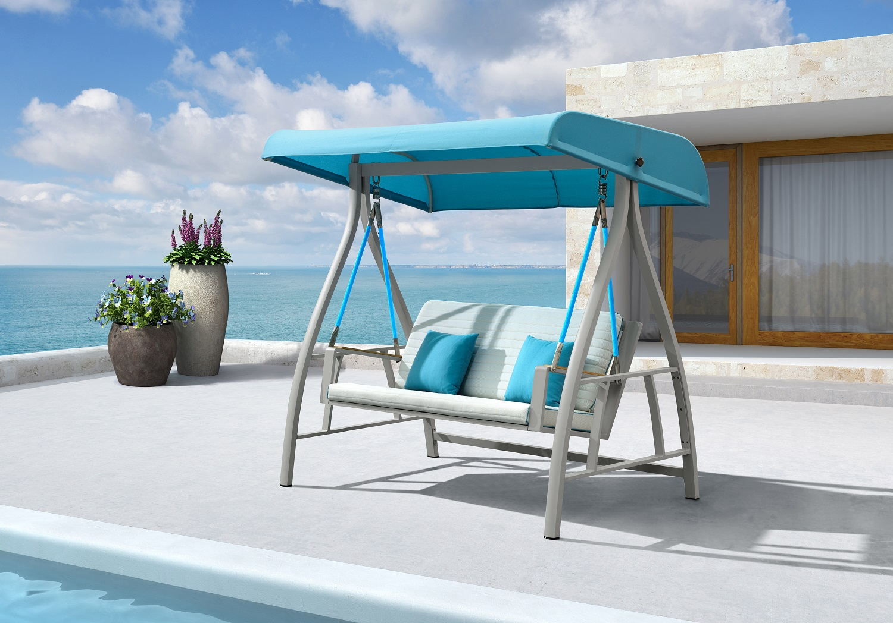

על המוצרים שלנו ימליצו לכם כל מעצבי הפנים. פינות הישיבה, משחקי החצר, הגרילים והנדנדות יהפכו את החצר שלכם לנוחה ויפה יותר. אל תתפלאו שהחברים והמשפחה יבקשו לשהות אצלכם יותר 😃
עיצבתם גינה, הוספתם תאורה, אבל בלי ריהוט גן מעוצב, משהו עדיין חסר. הצוות המקצועי של secret garden מסביר לכם מדוע כדאי לכם להשקיע ולהוסיף לגינה שלכם ריהוט גן מעוצב ואיכותי.
אם ריהוט היא קטגוריה הכוללת חפצים שונים שמשמשים לישיבה, אכילה ופונקציות נוספות בתוך הבית, הרי שריהוט גן הוא כינוי לרהיטים שמקומם בגינה. בעבר ריהוט לגינה הסתכם בכיסאות פלסטיק לבנים ושולחן שמתקשה לעמוד על רגליו ועף בכל רוח מצויה, אולם בשנים האחרונות חלה פריחה בתחום, וריהוט גן נעשה לחשוב ומשמעותי. תערוכות בינלאומיות מוקדשות לריהוט גן, מעצבים פונים לתחום וכיום ניתן למצוא גם מותגי יוקרה שמייצרים רהיטים שמוכוונים לעמוד בחצר האחורית שלכם.
ריהוט גן הוא אמצעי פונקציונלי שיאפשר לכם לשבת בגינה בנוחות, אולם הוא מספק לגינה שלכם גם ערך מוסף. ריהוט מעוצב יעניק לגינה מראה ייחודי, ועל ידי התאמה בין פריטי הריהוט השונים, ובינם לבין העיצוב של הגינה תוכלו ליצור מרחב מעוצב ומזמין במיוחד.
הטעות הכי גדולה שאתם יכולים לעשות בהקשר של ריהוט לגינה היא לבחור בריהוט בלי לחשוב על החומרים מהם הוא עשוי ועל העמידות שלו. לא משנה כמה יפים הכיסאות שתבחרו, וכמה השולחן אסתטי, אם לא תבחרו ריהוט איכותי ועמיד הכל ייהרס בתוך עונה או שתיים. בקיץ השמש קופחת על הרהיטים, ובחורף הרוח והגשם מכים בהם ללא רחם. גם אם תקפידו לכסות אותם, ואפילו לאחסן אותם בימים גשומים, אם הרהיטים עשויים מהחומרים הלא נכונים הם פשוט לאל יחזיקו מעמד.

אתם מעוניינים ברכישת ריהוט גן איכותי ומעוצב, אולם אין לכם מושג איפה כדאי לקנות. תוכלו לפנות לחנויות שונות המתמחות בריהוט לגינה, אולם אתם לא חייבים לצאת מהבית כדי לקנות ריהוט איכותי, תוכלו למצוא חנויות מצוינות שמוכרות ריהוט איכותי במחיר משתלם. שימו לב לחומרים מהם עשוי הריהוט שאתם מזמינים, וכן לאחריות שמספקת החנות על המוצרים שלה. בסופו של דבר תוכלו להזמין ריהוט במחיר משתלם שיגיע עד הבית שלכם. אנו מזמינים אתכם להתרשם ממגוון רהיטי הגן בקטלוג שלנו ולבחור את הריהוט המתאים עבורכם.
אחת מהשאלות הנפוצות ביותר העולה כאשר מדברים על ריהוט גן, היא "מדוע בכלל אנחנו זקוקים לכך? האם ריהוט גן חייב להיות ריהוט ייעודי לכך? מה רע בלהוציא מהבית עצמו שניים-שלושה כסאות, שולחן קטן, וזהו?" אז זהו, שלא. ריהוט הממוקם מחוץ לבית, חשוף לגשם, לשמש, לרוח ולפגיעות אחרות, חייב להכיל תכונות מסוימות, אשר בלעדיהם, הוא אולי יצליח לתפקד כ"ריהוט", אבל חייו יהיו קצרים והבלאי שלו יהיה גדול בהרבה, מהבלאי החל על רהיטים המיועדים לשהייה בחצר, בגן או בגינה. זוהי הסיבה לכך כי קיימות חנויות המתמחות בריהוט גינה, כמו secret garden, למשל, ולא כל כסא או שולחן מתוך הבית יתאימו לכך.
הזכרנו קודם את איתני הטבע, ולכן, כעת נרחיב מעט בנוגע לנושא הבלאי שהם עלולים לגרום לריהוט שאיננו מתאים לשהייה רציפה מחוץ לכותלי הבית. מים, למשל, בין אם מקורם בשמיים ובין אם מקורם בברז ההשקיה, עלולים לגרום לקורוזיה ברהיטים העשויים ממתכת שאיננה חסינה בפניה. הם גם עלולים לגרום לריקבון של חומרים כמו ראטן, קש, עץ, ספוג ובדים, שלא עברו את הטיפול המתאים שמגן עליהם מפני חדירת המים, היקוותם או ספיגתם. אם חשבתם שרק החורף עלול להזיק לרהיטי הגן, טעיתם, מאחר וגם לחום רב מידי או לשמש הקופחת ישירות על הרהיטים יש חלק נכבד בבלאי שלהם ובאובדן מראם האסטטי.
סניפים:
סניף און ליין:www. secret garden
חיפה: הרצל 52
טלפון: 07-758-6475
דואר אלקטרוני: secret garden@gmail.com
.svg (1).png)